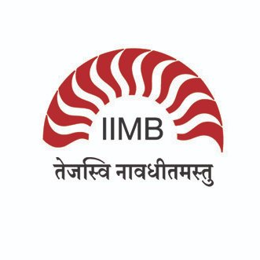

- Chartboost [01.2022 to Present]
-
As a Data Scientist in the Bidder Product Team
- Currently working to improve revenue by analysing data, building models and maintaining existing models.
- ...
- AMD R&D [01.2020 to 08.2021]
-
As an MTS ML/AI SDE at AMD R&D
- Automated Driver Code Testing
I developed a system that automatically generates test plans for drivers using Recurrent Neural Networks (RNNs) and Word2Vec. This system also classifies the failures and identifies the root causes of the failures. This project saved 9+ FTE resources for multiple focus areas in ~1.5 years.
- Bug Severity Identification
I developed an ensemble of Random Forests and Naive Bayes models to identify the severity of bugs. This project reduced the need for manual evaluations by 30%.
- TVAlly [07.2017 to 12.2019]
-
As Co-Founder and CEO
- Content-based Recommender System
I developed a content-based recommender system for songs and tracks. I scraped over 10,000 songs and tracks, automated the annotation of track elements, and created over 100 playlists. This project decreased search time by 75% and increased user engagement by 50%.
- ML/DS Head
I led a team of four in deploying models to estimate optimal web page journeys and predict customer retention. This helped in better targeting of customer segments and improved customer retention strategies.
-
 Google [08.2015 to 07.2017]
Google [08.2015 to 07.2017]
-
As an Analyst in the Trust and Safety team
- Anti-Spam and Abuse Solutions
I led the efforts to reduce spam and abuse on the platform by building scalable solutions.
- In-House ML Team
I built an in-house machine learning team and managed the delivery of 5 projects within 2 quarters.
- Gibberish Content Identification
I developed an ensemble model to identify gibberish content on web pages, which reduced the spam rate by 35% in a quarter.
- User Feedback Automation
I built a tool that automatically segments user feedback into actionable segments for different teams using natural language processing techniques and machine learning models. This tool reduced the time to action by 20% and improved the feedback response rate by 50%.
- ML Training for Employees
I trained 150+ employees across different locations on machine learning techniques to increase ML adoption.
- LatentView [12.2012 to 07.2015]
-
As a Senior Analyst
- Enhancing Music Rankings
I used Principal Component Analysis (PCA) to identify the causal factors that contribute to album ranking on the Billboard Charts for a multinational music conglomerate.
- Increasing Customer Conversion
I developed a strategy that used clustering techniques to convert prepaid to postpaid accounts for an Indonesian telephone services provider. This project improved monthly conversions from 3.5% to 15% in 2 quarters.
As an Analyst- Credit Card Fraud Detection
I trained 2,500 models using various segments of a 2 billion row dataset with 2,500 dimensions to detect credit card frauds for a global credit card company. This project reduced fraud by 40%.
- Credit Scoring System
I modeled a credit scoring system for a Middle Eastern country's Credit Bureau with an AUC of 0.75.
- Brand Perception Analysis
I prepared brand perceptual charts by scraping Twitter data for a multinational beverage brand to identify potential market gaps.
Professional Chronology
Select Projects
Education Chronology
-
Northwestern University [09.2021 to 12.2022]
MS in Artificial Intelligence -
Courses
- Deep Generative Models
- Logic in AI
- Law and Governance of AI
- Seminar in Statistical Language Modeling
- Deep Reinforcement Learning
- AI Perspectives: Symbolic Reasoning to Deep Learning
- Natural Language Processing
- Knowledge Reasoning and Representation
- Human-Computer Interaction
- Deep Learning
- Machine Learning
- Introduction to Artificial Intelligence
- Frameworks for Artificial Intelligence
- Data Science Seminar
Projects- Capstone Project: Solidus Labs [09.2022 - 12.2022]: Built a LDA topic analysis model for analyzing calls transcriptions for identifying and improving the sales training in the company at various stages of sales process
- Practicum Project: Adobe [03.2022 - 07.2022]: Built T5 models to summarize technical papers with control
- Attention to Detail is What You Might Need
- Predicting stock prices based on relevant news articles using deep learning language models
- Translate American Sign Language to English using machine learning language modeling
- Analysis of Rewards and Disciplinary Actions and their effects on the Chicago Police Department
Internships- JP Morgan Chase [06.2022 - 08.2022]: Worked in the CIB Risk team to create Reusable Auto-Explain Models in loss calculation for a USD 4T Portfolio
-

IIM - Bangalore [07.2017 to 07.2018]
Certificate in Business Analytics and Intelligence -
Topics
- Probability and Distributions
- Hypothesis Testing
- Supervised Learning
- Unsupervised Learning
- Optimization
- Prescriptive Analytics
- Time Series Modeling
- Data Visualization
-
BITS-Pilani, Hyderabad Campus [01.2009 to 12.2012]
BE with Honors, Majored in Chemical Engineering -
Select Courses
- Computer Programming
- Probability and Statistics
- Optimisation
- Numerical Analysis
- Operations Research
- Fuzzy Logic and Applications
- Financial Management
- Principles of Management
Internships- Hetero Drugs [07.2012 - 12.2012]: Applied modeling to efficiently utilize solutions in drug research
- PVS Laboratories [05.2011 - 07.2011]: Studied business hierarchy, entrepreneurship and marketing
Leadership- Hostel Representative taking care of individuals well-being and sports equipment
- Core Member in Telugu Language Association organizing events for various occasions
- Joint Secretary for Chemical Engineering Association organizing events for various occasions
Others- Founded and ran a food-dispensing start-up, Food++ [09.2011 to 11.2011]